Электронный тепловой выключатель агрегатов и узлов аппаратуры
1. Введение
Электронный тепловой выключатель может использоваться для отключения отдельных агрегатов и узлов радиоэлектронной и электроаппаратуры при их нагреве свыше заданной предельной температуры: трансформаторов, электродвигателей, катушек реле, полупроводниковых устройств с теплоотводами и т. п.
2. Электрическая принципиальная схема и конструкция электронного теплового выключателя
Электрическая принципиальная схема электронного теплового выключателя приведена на рис. 2.1. В качестве датчика температуры используются четыре последовательно включенных кремниевых диода VD0.1-VD0.4. При температуре 25 0C падение напряжения на датчике составляет порядка 2 В, температурный коэффициент преобразования равен примерно -10 мВ/0C. Устройство питается от сети переменного тока напряжением 220 В частотой 50 Гц по бестрансформаторной схеме. Сетевое напряжение через балластный конденсатор C3 подается на диодный мост VD5-VD8. Выпрямленное напряжение стабилизируется цепочкой стабилитронов VD3VD4 и фильтруется конденсатором C2. Резистор R12 ограничивает амплитуду импульса тока при включении, а резистор R11 служит для разряда конденсатора C3 после выключения устройства. Датчик температуры подключается через резистор R1, значение которого определяет величину тока через датчик. Делитель напряжения R2R3 задает температуру, при которой происходит срабатывание компаратора, собранного по схеме триггера Шмидта на операционном усилителе DA1 (К140УД6 или аналогичный). Разница температур включения и выключения зависит от соотношения величин резисторов R4R7. Выходное напряжение компаратора управляет работой электронного ключа VT1, ток через который подается в рабочую обмотку реле P1. Нагрузка, температура которой контролируется с помощью установленного на ней датчика VD0.1-VD0.4, включается через контакты K1.1 реле P1. Пока температура на контролируемом агрегате или узле ниже заданной предельной, контакты замкнуты. Когда температура превышает заданную предельную, контакты размыкаются, агрегат или узел отключаются, начиная охлаждаться. После охлаждения ниже заданной предельной температуры (с некоторым дополнительным смещением, определяемым соотношением сопротивлений резисторов R4R7), контакты реле замыкаются вновь.
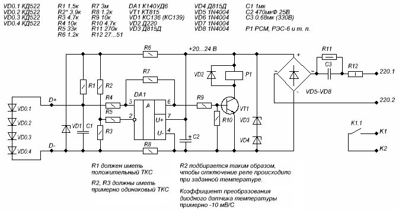
Рис. 2.1. Электрическая принципиальная схема теплового выключателя.
Электронный тепловой выключатель собран на печатной плате из одностороннего фольгированного стеклотекстолита размером 100 х 50 мм2 (рис. 2.2). Датчик температуры собран на печатной плате из двухстороннего фольгированного стеклотекстолита размером 10 х 10 мм2 (рис. 2.3) и подключается к контактам платы электронного теплового выключателя с помощью витой пары необходимой длины.
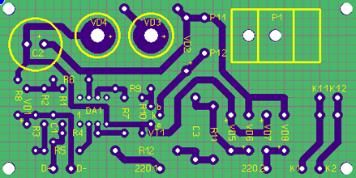 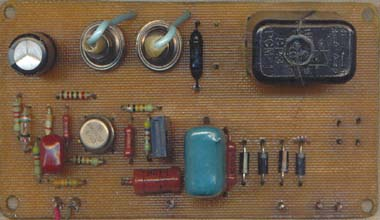
Рис. 2.2. Печатная плата электронного теплового выключателя: односторонний фольгированный стеклотекстолит толщиной 1.0 ... 1.5 мм, размеры 100 х 50 мм2.
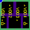 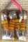
Рис. 2.3. Печатная плата датчика температуры электронного теплового выключателя: двухсторонний фольгированный стеклотекстолит, размеры 10 х 10 мм2.
3. Конструкция электронного теплового выключателя на SMD-элементах
С целью уменьшения габаритов разработан также вариант печатной платы теплового выключателя с использованием поверхностного монтажа. Электрическая принципиальная схема аналогична приведенной выше и показана на рис. 3.1. Для повышения помехоустойчивости добавлен конденсатор C2. С помощью цепочки R8VD2 можно задавать нижний порог включения реле. В качестве силового ключа применен N-MOP транзистор VT1, хотя возможно использование и биполярного NPN-транзистора без изменений схемы. Для разряда конденсатора C4 использована цепочка из двух резисторов (R13R14), так как рабочее напряжение одного SMD-резистора типоразмера 1206 не должно превышать 200 В. Резисторы R15R16, выполняющие роль токоограничителя, соединены параллельно для уменьшения рассеиваемой мощности на каждом из них. Для управления внешней нагрузкой могут быть задействованы как замыкающие, так и размыкающие контакты реле (например, для включения вентилятора при охлаждении управляемого устройства).
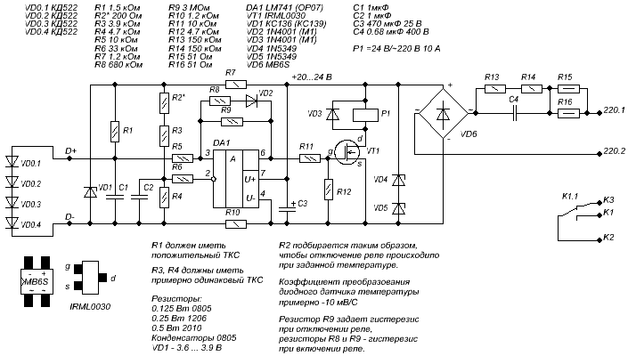
Рис. 3.1. Электрическая принципиальная схема теплового выключателя на SMD-элементах.
Монтаж выполнен на печатной плате из одностороннего фольгированного стеклотекстолита [2] размером 55 х 40 мм2 (рис. 3.2). В качестве датчика температуры может использоваться датчик, изображенный на рис. 2.3. Вариант печатной платы датчика уменьшенных размеров из двухстороннего фольгированного стеклотекстолита размером 10 х 8 мм2 показан на рис. 3.3.
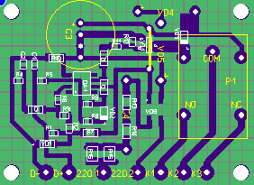
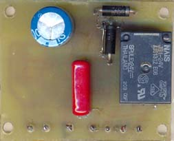
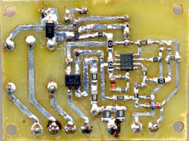
Рис. 3.2. Печатная плата электронного теплового выключателя: односторонний фольгированный стеклотекстолит толщиной 1.0 ... 1.5 мм, размеры 55 х 40 мм2.
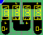
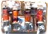
Рис. 3.3. Печатная плата датчика температуры электронного теплового выключателя на SMD-диодах LL4148: двухсторонний фольгированный стеклотекстолит, размеры 10 х 8 мм2.
Электронный тепловой выключатель применялся, в частности, для защиты от перегрева силового трансформатора емкостного накопителя энергии [1].
Ссылки:
04.07.2011
11.12.2024
Альтернативные источники
энергии
Компьютеры и
Интернет
Магнитные поля
Механотронные системы
Перспективные
разработки
Электроника и технология